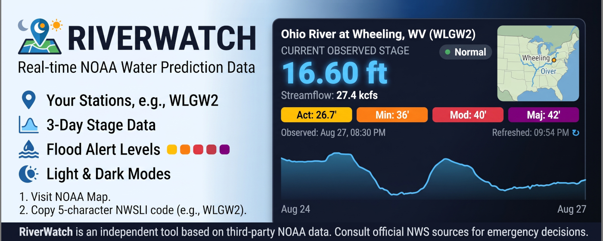
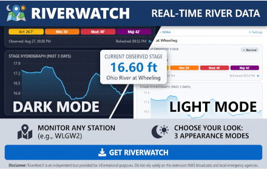
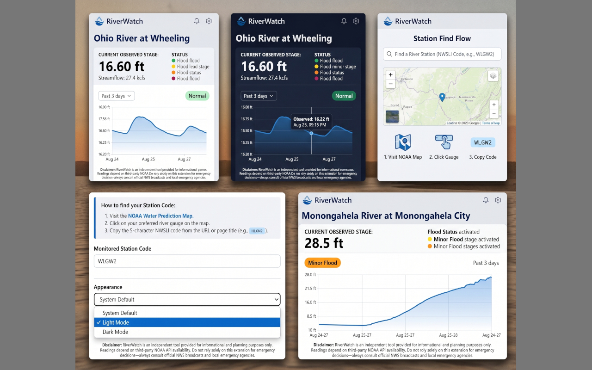

Near real-time NOAA river stage levels, streamflow rates, and 3-day trend charts in your Chrome toolbar.
View on Chrome Web Store
RiverWatch is a lightweight Manifest V3 Chrome extension designed for kayakers, anglers, river enthusiasts, and flood-prone communities. It pulls data directly from official NOAA water prediction endpoints to deliver instant stage height readings without requiring complex web navigation.
Clean interface supporting light and dark themes alongside easy station selection.


Effective Date: August 2026
RiverWatch is committed to protecting user privacy. RiverWatch does not collect, store, track, transmit, or share any personal information, sensitive user data, browsing history, or analytics.
WLGW2) and appearance theme locally using Chrome's standard chrome.storage API. This data remains strictly on your device and is never sent to external servers or third parties.https://api.water.noaa.gov/*) solely to fetch real-time river stage levels, streamflow metrics, and flood threshold metadata. No personal identifiers or tracking telemetry are included with these API requests.RiverWatch contains no advertising, tracking scripts, telemetry, remote code, or third-party analytics.
If you have questions regarding this Privacy Policy, please open an issue on our GitHub repository.